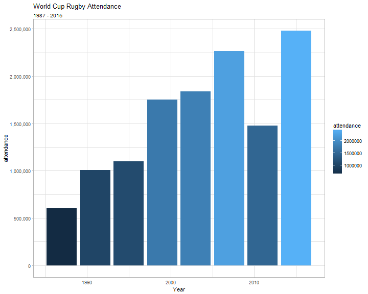
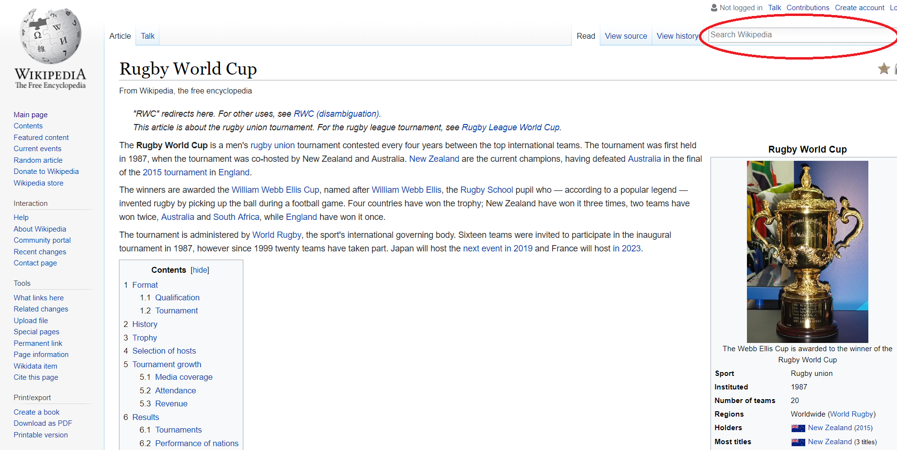
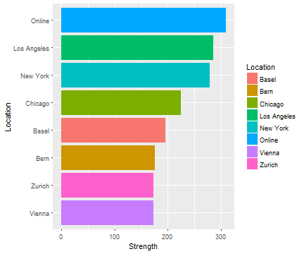

Scraping static websites with rvest
Exploring Rvest
Hanjo Odendaal
Links to slides
Rvest: https://bit.ly/2KYQZDA
Rselenium: https://bit.ly/2KWd6dW
Code Repo in Gist: https://bit.ly/2NA3Spg
First things first: What will we be doing today
Topics and outcomes
Session 1:
- Ethics
- Know where you draw the line
robottxt- How we can use them to identify accessible sites
Rvest
- Learning the basics
Getting
RSeleniumconnected withdocker- Lets get the engine started!!
Topics and outcomes
Session 2:
- RSelenium basic functionality
- Driving your browser from
R - Useful functions in pipeline
- Driving your browser from
- Getting to know Australian wines a bit better
Ethics
With great power comes great responsibility
The FAQ of Scraping
There is a big distinction here, we have to seperate ethics vs law
Is scraping illegal?
- Well... yes and no. At the moment the law is still undefined and has to catch up a lot to define online data collection. But, that being said, malicious attempts to halt a service of a website is a DDOS attack and is illegal
What can I do to ensure I dont I dont expose myself or the company in a 'legal/ethical' scraping project?
- Personal data is a big no no. IF you are collecting data from a website which contains personal information. Make sure you are not collecting/saving any of it. Transform and ensure complete anonymization of data points
The rules of the game
10 Commandments of the data scraper Find the orignal here
I Shall Go Through Appropriate Channels if Available: If the website has a public API that provides the data, use it and avoid scraping all together
Consider The Poor Sysadmin: Provide a User Agent string that makes intentions clear and provides a way for sysadmins to contact you with questions or concerns
I Am not A Robot: Request data at a reasonable rate (~5sec wait). Don't ever be confused for a DDoS attack. Play nice with others
I shall not become addicted to data: Collecting data without a cause is very Big Brother. Only take what you need
10 Commandments of the Data Scraper (Cont.)
I Shall Not Plageriase: If the website has a public API that provides the data, use it and avoid scraping all together
Not Just Interesting: Create new value from the data
Realise People Are People: Why scrape when you can just contact the holder who might SFTP it to you?
You Are Responsible, Not Your Boss: You are the expert, guide your line managers and highlight when you are uncomfortable
robotstxt
Informal arrangements
Web site owners use the /robots.txt file to give instructions about their site to web robots; this is called The Robots Exclusion Protocol.
- Robots.txt is still a very informal "institution", and there is no authoritative list of robots. Rvest wraps around the curl and httr packages-libraries, and neither has a robot name, beyond the one you could give them
User-agent: *
Disallow: /cgi-bin/
Disallow: /tmp/
Disallow: /~joe/
User-agent: Google
Disallow:
User-agent: *
Disallow: /
Using Robotstxt
if(!require(robotstxt)) install.packages("robotstxt")
library(robotstxt)
rtxt <- robotstxt(domain = "www.fbi.gov")
rtxt$comments %>% tbl_df
## # A tibble: 8 x 2
## line comment
## <int> <chr>
## 1 3 # Define access-restrictions for robots/spiders
## 2 4 # http://www.robotstxt.org/wc/norobots.html
## 3 8 # By default we allow robots to access all areas of our site
## 4 9 # already accessible to anonymous users
## 5 16 # Add Googlebot-specific syntax extension to exclude forms
## 6 17 # that are repeated for each piece of content in the site
## 7 18 # the wildcard is only supported by Googlebot
## 8 19 # http://www.google.com/support/webmasters/bin/answer.py?answer=4~
What part of the site may I visit?
FBI literally gives is almost free rein on their website!
rtxt$permissions
## field useragent value
## 1 Disallow *
## 2 Disallow * /@@search?
## 3 Disallow * /search?
## 4 Disallow * /*atct_album_view$
## 5 Disallow * /*folder_factories$
## 6 Disallow * /*folder_summary_view$
## 7 Disallow * /*login_form$
## 8 Disallow * /*mail_password_form$
## 9 Disallow * /*search_rss$
## 10 Disallow * /*sendto_form$
## 11 Disallow * /*summary_view$
## 12 Disallow * /*thumbnail_view$
## 13 Disallow * /plonejsi18n$
## 14 Disallow * /*@@castle.cms.querylisting*?
What part of the site may I visit?
If you know exactly what you want to lookup, you can do a specific check on that url
paths_allowed("https://www.rba.gov.au/speeches")
## [1] TRUE
Path lookup in batch
paths_allowed(
paths = c("/publications","/speeches"),
domain = c("https://www.rba.gov.au"),
bot = "*"
)
## [1] TRUE TRUE
Lets have a final look at the wikipedia robottxt file
Crawl-delay
Remember as part of the commandments we must ensure our scraper behaves well and not try an access all files all at once? The crawl_delay feature comes into play here:
rtxt$crawl_delay
## [1] field useragent value
## <0 rows> (or 0-length row.names)
But what if the robottxt file we downloaded did not contain any information?
Then sleep for around 5 - 10 seconds between calls

What do I mean by sleeping between calls?
We need to tell R to not go absolutely beserek and try and get all the pages we want to investigate at once, we do this using the Sys.sleep command
nytnyt <- function (periods = c(1,1.5)){
tictoc <- runif(1, periods[1], periods[2])
cat(paste0(Sys.time()), "- Sleeping for ", round(tictoc, 2), "seconds\n")
Sys.sleep(tictoc)
}
nytnyt()
## 2018-07-06 21:21:35 - Sleeping for 1.02 seconds
rvest
Installing rvest
Easy har-vest-ing of static websites. Welcome to rvest
if(!require(rvest)) install.packages("rvest")
library(rvest)
If you have used XML before, rvest is a dish of the same flavour
get_ip <- function(){
read_html("https://api.ipify.org?format=json") %>%
html_text() %>%
jsonlite::fromJSON()
}
get_ip()
## $ip
## [1] "41.2.35.15"
Now to extend on this example
DOM who? Learning the jargon
ask <- read_html("http://ask.com")
ask %>% html_nodes("div")
## {xml_nodeset (15)}
## [1] <div class="l-header">\n <div class="l-header-container">\n ...
## [2] <div class="l-header-container">\n \n\n\n</div>
## [3] <div class="main">\n <div class="l-mid-content content-visible"> ...
## [4] <div class="l-mid-content content-visible">\n <div class="l- ...
## [5] <div class="l-mid-container">\n \n\n\n\n<script>\n ...
## [6] <div class="wrap-sides">\n <div class="PartialHome-wrapper" data ...
## [7] <div class="PartialHome-wrapper" data-zen="true">\n \n<div c ...
## [8] <div class="PartialHome-wrapper-logo"></div>
## [9] <div class="search-bar">\n <form accept-charset="UTF-8" ...
## [10] <div class="PartialHome-clear search-clear js-PartialHome-clear"></ ...
## [11] <div class="l-right-content content-visible">\n\n</div>
## [12] <div class="l-footer content-visible">\n <div class="l-footer-co ...
## [13] <div class="l-footer-container">\n \n\n \n\n<div class="P ...
## [14] <div class="PartialFooter-body">\n <ul class="PartialFooter-list ...
## [15] <div id="shadow" style="height: 100%; display: none;"></div>
What is the Document Object Model
- The Document Object Model (DOM) is a programming interface (API) for HTML and XML documents.
- DOM represents the document as nodes and objects. Its the way programming languages connect to the page
- DOM is an object-oriented representation of the web page, which can be modified or accessed
Useful link

html_table()
html_table() is an easy to use wrapper that identifies the nodes of class <td></td> and <th></th>.
Lucky for us, we don't need to know what is happening in the background! I am going to explore the rugby world Cup information from wikipedia
rugby <- read_html("https://en.wikipedia.org/wiki/Rugby_World_Cup")
rugby_tables <- rugby %>% html_table(., fill = T)
html_table()
Lucky for us, we don't need to know what is happening in the background! I am going to explore the rugby world Cup information from wikipedia
rugby <- read_html("https://en.wikipedia.org/wiki/Rugby_World_Cup")
rugby_tables <- rugby %>% html_table(., fill = T)
library(scales)
rugby_tables %>%
.[[3]] %>%
mutate(attendance = as.numeric(gsub("[^0-9.-]+", "", `Total attendance`))) %>%
ggplot(., aes(Year, attendance, fill = attendance)) +
geom_bar(stat = "Identity") +
labs(title = "World Cup Rugby Attendance",
subtitle = "1987 - 2015") +
scale_y_continuous(label = comma) +
theme_light()

html_nodes()
Ok, lets see how we can use the nodes to extract data
- Using the selector gadget, we can identify nodes within the DOM, that we would like to focus on
- There are 2 methods by which you can isolate a node: CSS and xpath
rugby %>%
html_nodes(., xpath = '//*[(@id = "toc")]') %>%
html_text %>%
cat
rugby %>%
html_nodes(., 'div#toc.toc') %>%
html_text %>%
cat
Concluding rvest
Rvest is an amazing package for static website scraping and session control. For 90% of the websites out there, rvest will enable you to collect information in a well organised manner. For the other 10% you will need Selenium.
I have added extra examples features of rvest that we will not get to today.
So onwards to Selenium!!
Added Extras
html_session()
Once you have basic static website scraping down, you need to start learning about sessions. What does this mean?
- cookies
- header requests
- status codes
In essence you will be simulating browser activity. Do note, its different from a browser in that it cannot render javascript, but it can simulate moving through static webpages
html_session()
So what does a session object contain?
rugby <- read_html("https://en.wikipedia.org/wiki/Rugby_World_Cup")
rugby
## {xml_document}
## <html class="client-nojs" lang="en" dir="ltr">
## [1] <head>\n<meta http-equiv="Content-Type" content="text/html; charset= ...
## [2] <body class="mediawiki ltr sitedir-ltr mw-hide-empty-elt ns-0 ns-sub ...
rugby <- html_session("https://en.wikipedia.org/wiki/Rugby_World_Cup")
rugby
## <session> https://en.wikipedia.org/wiki/Rugby_World_Cup
## Status: 200
## Type: text/html; charset=UTF-8
## Size: 272530
This becomes useful when you are interacting with websites; lets take a look at forms


html_form()
So to interact with forms, we are going to use html_session and html_form
rugby <- html_session("https://en.wikipedia.org/wiki/Rugby_World_Cup")
rugby_form <- rugby %>% html_form()
rugby_form
## [[1]]
## <form> 'searchform' (GET /w/index.php)
## <input search> 'search':
## <input hidden> 'title': Special:Search
## <input submit> 'fulltext': Search
## <input submit> 'go': Go
html_form()
Next, we can actually fill in the form using set_values
rugby_form[[1]]$fields$search$value
## NULL
rugby_form <- set_values(rugby_form[[1]], search = "cricket")
rugby_form
## <form> 'searchform' (GET /w/index.php)
## <input search> 'search': cricket
## <input hidden> 'title': Special:Search
## <input submit> 'fulltext': Search
## <input submit> 'go': Go
cricket <- submit_form(rugby, rugby_form)
## Submitting with 'fulltext'
html_form()
cricket %>%
html_nodes("a") %>%
html_attr("href") %>%
.[10:15]
## [1] "/wiki/Cricket"
## [2] "/wiki/India_national_cricket_team"
## [3] "/wiki/History_of_cricket"
## [4] "/wiki/One_Day_International"
## [5] "/wiki/List_of_countries_received_ODI_status_(cricket)"
## [6] "/wiki/2019_Cricket_World_Cup"
Case Study: Investing drugs test
Breaking down the URL
- '?' - breaks the up the API and parameters follow
- '&' - breaks up parameters
- 'start=' - this will be the incremental control of the pages
- 'max=' - amount of observations returned
Lets get started
Read the webpage into R
pg <- read_html("https://www.ecstasydata.org/index.php?sort=DatePublishedU+desc&start=0&max=200")
pg
## {xml_document}
## <html>
## [1] <head>\n<title>EcstasyData.org: Lab Test Results for Ecstasy/Molly a ...
## [2] <body id="Home" class="TestResults">\n<div id="pre-content-top" styl ...
Extract table
We will use rvest::html_table to extract table
pg_table <- pg %>%
html_table(fill = T) %>%
.[[2]]
names(pg_table) %>% head
## [1] "Sample Photo"
## [2] "Sample NameSample Name is the street name that was submitted with the sample (or the common street-name for a table imprint or sample). The individual result view page provides more information."
## [3] "Active ContentsActive Contentsis a list of substances detected by the lab."
## [4] "Active ContentsActive Contentsis a list of substances detected by the lab."
## [5] "Date PublishedDate Published is in most cases within two weeks of the date that the tablet was received by the lab (MAPS and other non-Ecstasydata results not included)."
## [6] "Date TestedDate Tested the approximate date when the sample was tested by the lab."
Extract table
pg_table <- pg %>%
html_table(fill = T) %>%
.[[2]]
name_table <- function(x){
names(x) <- c("Photo", "Name", "Substance", "Amounts",
"Date_published", "Date_tested", "Location",
"Sample_size", "Data_source")
x %>% tbl_df
}
pg_table <- pg_table %>%
name_table %>%
tbl_df %>%
slice(-1)
Building cleaning function
As with all scraping project a functional approach works amazing.
clean_table <- function(x){
# 1) Clean Amounts
# 2) Clean Locations
# 3) Coerce date
x %>%
slice(-1) %>%
select(Name, Substance, Amounts, Date_published, Location, Sample_size) %>%
filter(Substance %in% "MDMA") %>%
mutate(Amounts = ifelse(Amounts == "1" , gsub("^([0-9]+) mg.*", "\\1", Sample_size),
gsub("^([0-9]+).*", "\\1", Amounts)),
Amounts = as.numeric(Amounts)) %>%
filter(!is.na(Amounts)) %>%
mutate(Location = gsub("^(.*), .*", "\\1", Location)) %>%
mutate(Date_published = lubridate::mdy(Date_published)) %>%
select(-Sample_size)
}
Crawl delay
We are going to build our own crawl-delay function using Sys.sleep and runif
nytnyt <- function (periods = c(2,3)){
tictoc <- runif(1, periods[1], periods[2])
cat("Sleeping for ", round(tictoc, 2), "seconds\n")
Sys.sleep(tictoc)
}
Putting all the pieces together
Building the pipeline
starts <- seq(0, 2000, 200)
collect_pg <- function(x){
read_html(paste0("https://www.ecstasydata.org/index.php?sort=DatePublishedU+desc&start=", x ,
"&max=200")) %>%
html_table(fill = T) %>%
.[[2]]
}
collect_pg(starts[1]) %>%
name_table(.) %>%
clean_table(.)
## # A tibble: 65 x 5
## Name Substance Amounts Date_published Location
## <chr> <chr> <dbl> <date> <chr>
## 1 Rolls Royce MDMA 139. 2018-06-29 Zurich
## 2 Grey Duracell MDMA 250. 2018-06-24 Manchester
## 3 "Vogel\nBird" MDMA 182. 2018-06-22 Zurich
## 4 Tesla MDMA 194. 2018-06-22 Zurich
## 5 "Pik Ass\nAce of Spades" MDMA 172. 2018-06-22 Zurich
## 6 AMG MDMA 170. 2018-06-22 Zurich
## 7 Silver MDMA 194. 2018-06-22 Zurich
## 8 Philipp Plein MDMA 149. 2018-06-20 Innsbruck
## 9 "SS\nZwei S" MDMA 133. 2018-06-20 Innsbruck
## 10 Dom Pérignon MDMA 136. 2018-06-20 Vienna
## # ... with 55 more rows
Putting all the pieces together (Cont.)
A use case for a for loop!
all_pages <- list()
for(i in 1:length(starts)){
cat("[",paste0(Sys.time()), "] Now collecting page ", i, "\n")
# Collection
all_pages[[i]] <- collect_pg(starts[i]) %>%
name_table(.) %>%
clean_table()
nytnyt()
}
all_pages %>% reduce(rbind)
Where are the best drugs?
Answering the questions!
Apparently, Europe is not where the strongest drugs are surfacing:
all_pages %>%
group_by(Location) %>%
summarise(Strength = mean(Amounts),
pill_count = n()) %>%
arrange(-Strength) %>%
filter(pill_count > 10) %>%
ggplot(., aes(reorder(Location, Strength), Strength, fill = Location)) +
geom_bar(stat = "Identity") +
coord_flip() +
labs(x = "Location")
